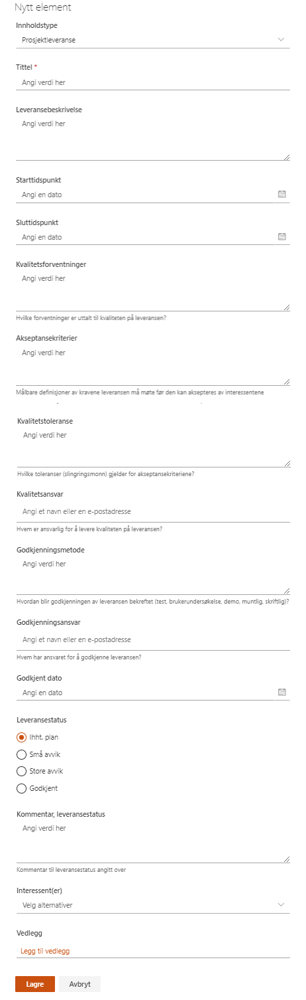

I dette verktøyet registreres og vedlikeholdes alle leveranser for prosjektet. Alle leveranser kan knyttes opp mot målgrupper fra interessentlisten.
Klikk på Ny i menyen.
Fyll inn skjemaet i henhold til leveransen og velg interessentgruppe fra Interessent(er)-feltet hvis dette er relevant for en konkret målgruppe.
